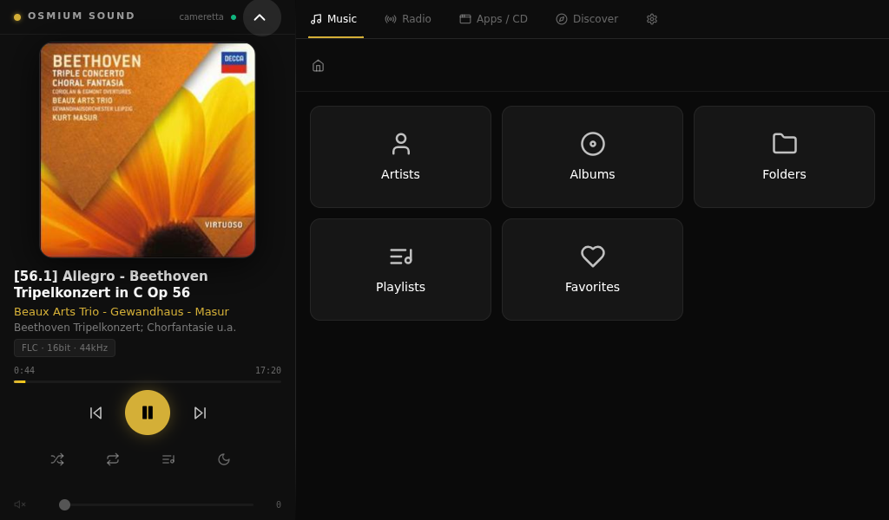

A touchscreen-first hi-fi media appliance built on Debian for x86 hardware. Bit-perfect audio, streaming services, and OTA updates — all in one sleek dark interface.
Flash one ISO image to a USB stick for the first install. From then on, every update — UI, system and OS — is delivered automatically over the air (dev channel: expect frequent, less-tested builds).
The kiosk session now runs on Wayland (labwc) instead of Xorg, which is where most of the GPU load during normal listening was going. labwc, wlr-randr and xwayland only exist from Debian 13 (trixie) onward, so the install image moved with them — every beta ISO up to dev111 was a Debian 12 image.
⚠️An OTA update will not move your device to Debian 13. A device installed from dev111 or earlier keeps receiving everything else on the dev channel, but labwc cannot be installed on Debian 12 — the kiosk stays on Xorg and part of the saving on Intel integrated graphics is lost. Measured on a Gemini Lake J4105/UHD 600, same scene: 0.81 W GPU and ~73% render-engine busy on Xorg, against 0.59 W and ~55% on Wayland. To get it, reinstall from the dev113 ISO below instead of updating over the air.
🔒 Before you download: installing this beta build means the appliance will automatically send diagnostic and performance data (device specs, resource usage) to our cloud platform, to help us find and fix bugs during the beta. During troubleshooting windows we trigger remotely, it also captures the network calls made by the on-screen interface itself — not system-wide traffic — with authentication/session data (streaming-service logins, cookies, tokens) and response bodies (page content, audio) automatically stripped before anything leaves the device. There is currently no in-app switch to turn this off — see the full privacy notice for exactly what is collected. This data collection is temporary: it will be removed once the private beta ends.
Accept the privacy notice above to enable the downloads.
Osmium Flasher downloads the image itself, checks its signature and writes the stick for you, then walks you through booting the mini PC and running the installer on it. No other tool, and no chance of picking the wrong disk — your system drive is never even listed. Pick the computer you will prepare the stick on, not the mini PC.
On macOS there is no download button on purpose. Run these two lines in Terminal instead — a browser would mark the app as quarantined and macOS would then refuse to open it.
Then drag the app across as usual. It starts with no warning at all.
Heads up: the app is not code-signed, so Windows and macOS will warn you the first time you open it. That is expected, and the note below says how to get past it.
Osmium Flasher is not code-signed, so SmartScreen stops it the first time. Click More info, then Run anyway. Windows will also ask for administrator rights: writing to a raw device needs them.
Make it executable with chmod +x Osmium-Flasher-*.run and run it. No warning to dismiss; you will get a polkit password prompt when the write starts. It is a self-extracting executable rather than an AppImage on purpose — an AppImage is mounted so that root cannot read it, which is exactly what the elevated write needs to do.
The app is not notarized, and a browser marks everything it downloads as quarantined — macOS then refuses to open it as “damaged”, with no button to get past it. The mark comes from the browser, not from the file, so fetching it from Terminal avoids it altogether.
If you have already downloaded it another way and hit that dialog, run xattr -dr com.apple.quarantine on the app to clear the mark.
Rather write the stick yourself? Download the image and use balenaEtcher, Rufus or dd.
hifi-player-v2.5.21-dev.114.iso is now ready! Click the link to start your download.
Use Osmium Flasher above on an 8 GB+ stick — it fetches and verifies the image itself. Prefer to do it by hand? balenaEtcher, Rufus and dd all still work.
Turn Secure Boot off in the firmware setup first — it is required on every machine. Then boot your x86 mini-PC from the stick and follow the on-screen installer. Reboot — you're done.
Note: the installer asks which disk to install on before formatting it — nothing is wiped without confirmation (tested on UEFI; the ISO is only needed for the first install, every later version arrives automatically over the air on the dev channel).
Try it live: pick Try Osmium Sound (no install) at the boot menu to run the kiosk straight from the USB stick, nothing written to disk. If it doesn't log in automatically, use hifi / hifi at the login screen.
⚠️ Get future updates: the installed system defaults to the Production channel, so it will not pick up new beta builds on its own. On the device, go to Settings → Updates and switch the update channel to Development. New dev builds will then show up there automatically as soon as they're published.
Step by step: writing the USB stick, first boot, device modes, web admin, music sources, DSP, multiroom, backup, OTA updates and troubleshooting — in English and Italian.
Open the manualBuilt for audiophiles who want a dedicated, appliance-grade media server without the complexity.
Native playback of FLAC, DSD, and PCM up to 192kHz. Bit-perfect DoP output over USB — no resampling, no compromise.
Deezer, Qobuz, TIDAL, Spotify and more — unified in one interface via Lyrion plugins, installed in one click from the web UI. No app switching.
Browse your local collection by Artist, Album, or Folder. Fast indexing powered by Lyrion Media Server.
Built-in radio browser with thousands of stations worldwide. Save favourites directly from the touchscreen interface.
Automatically detects USB DACs and audio interfaces. Switch outputs on the fly with persistent selection across reboots.
Signed over-the-air updates for UI, API daemon, and OS. Switch between Production and Development channels from settings.
Optimised for touchscreens. Clean, dark, distraction-free.

Images are indicative and may differ from the current version as the interface evolves.
| Hardware | x86 / x86-64 |
| OS | Custom Debian distro |
| Interface | Electron + React |
| Backend | Node.js API daemon |
| Media server | Lyrion Media Server |
| Update system | Signed OTA (Ed25519) |
| License | MIT |
| Formats | FLAC, DSD, MP3, AAC, WAV, AIFF |
| Max resolution | 32-bit / 192kHz PCM |
| DSD support | DSD64, DSD128, DSD256 (DoP) |
| Output | USB DAC, HDMI |
| Playback mode | Bit-perfect (no resampling) |
| VU meters | Analog-style real-time display |
| Streaming | Deezer, Qobuz, TIDAL, Spotify (via Lyrion plugins) |
Control Osmium Sound from your phone. Browse your library, drive playback and the queue, and adjust volume — pair in seconds by scanning the QR code on the device's Settings screen.
Grab HiFiMediaPlayer-companion-v1.0.7-svil9-release.apk using the button above.
Open the APK on your phone and allow install from unknown sources when prompted. Requires Android 8.0 or newer.
On the same Wi-Fi, open the app and scan the pairing QR code from the device's Settings → Phone control.
Note: the companion app is distributed as a signed APK (sideload) or via our self-hosted F-Droid dev repo — it is not on the Play Store. This dev repo tracks "-svil" builds, ahead of and less tested than the stable repo. Prefer F-Droid if you want automatic updates: tap Add F-Droid dev repo above (F-Droid app required), or add https://osmiumsound.it/fdroid/dev/repo manually under Settings → Repositories. Your phone and the appliance must be on the same local network.
🔒 The companion app itself does not send diagnostic data anywhere — the data collection described in this beta's privacy notice runs on the appliance, not on your phone.
Write to support@osmiumsound.it and an issue is opened automatically on the project's GitHub repository, so it can be tracked and followed up like any other bug or request. Please describe your issue clearly (what happened, what you expected, and any relevant details like your ISO/APK version) — this becomes the issue text.
Email support@osmiumsound.itFile it yourself directly on the project's GitHub repository — the same place your email would end up anyway, just skipping the middle step.
Open an issue on GitHub